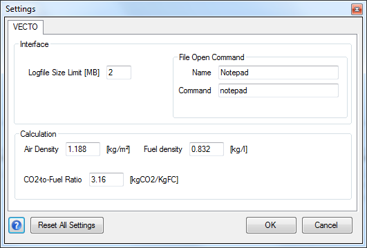

Settings

Description
In the Settings dialog controls general application settings. The settings are saved in the settings.json file.
Interface Settings
Logfile Size Limit [MB]
In the Settings dialog controls general application settings. The settings are saved in the settings.json file.
Interface Settings
Logfile Size Limit [MB]
Whenever
the Log File reaches this size it
will be restarted. One backup is always stored as LOG_backup.txt.
File
Open Command
This command will be used
to open CSV Input Files like Driving Cycles (.vdri). See: Run command 
Name: Name of the command as it will be shown in the menu when clicking the button.
button.
Command: The actual command.
Example: If the command is excel and the file is C:\VECTO\cycle1.vdri then VECTO will run: excel "C:\VECTO\cycle1.vdri"
Name: Name of the command as it will be shown in the menu when clicking the
button.Command: The actual command.
Example: If the command is excel and the file is C:\VECTO\cycle1.vdri then VECTO will run: excel "C:\VECTO\cycle1.vdri"
Calculation Settings
Air Density [kg/m3]
The Air Density is needed
to calculate the air resistance together with the Drag Coefficient and
the Cross Sectional Area
(see Vehicle Editor).
Fuel Density [kg/l]
The Fuel Density is used
to calculate the l/km results.
CO2-to-Fuel Ratio [-]
Mass ratio (kgCO2
/ kgFC) used to calculate CO2
emissions.
Controls
Reset All Settings
Alle values in the
Settings dialog and Options Tab of the Main Form will be restored to default values.
 Save and close dialog
Save and close dialog Close without saving
Close without saving